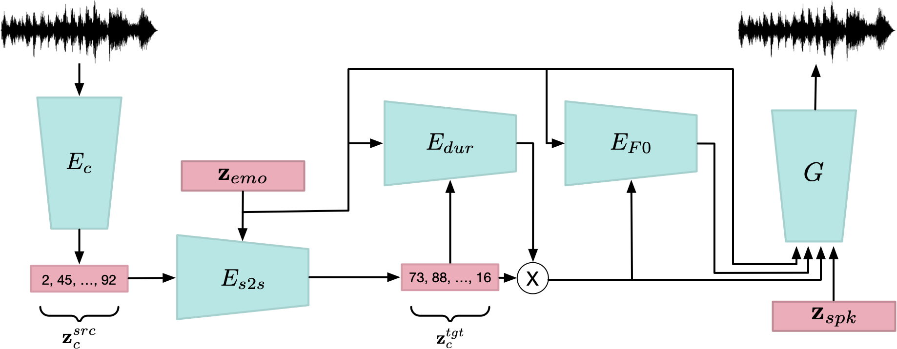

Textless Speech Emotion Conversion using Decomposed & Discrete Representations
Felix Kreuk, Adam Polyak, Jade Copet, Eugene Kharitonov, Tu-Anh Nguyen, Morgane Revière, Wei-Ning Hsu, Abdelrahman Mohamed, Emmanuel Dupoux, Yossi Adi
In Preprint
[Paper]

Speech emotion conversion is the task of modifying the perceived emotion of a speech utterance while preserving the lexical content and speaker identity. In this study, we cast the problem of emotion conversion as a spoken language translation task. We decompose speech into discrete and disentangled learned representations, consisting of content units, F0, speaker, and emotion. First, we modify the speech content by translating the content units to a target emotion, and then predict the prosodic features based on these units. Finally, the speech waveform is generated by feeding the predicted representations into a neural vocoder. Such a paradigm allows us to go beyond spectral and parametric changes of the signal, and model non-verbal vocalizations, such as laughter insertion, yawning removal, etc. We demonstrate objectively and subjectively that the proposed method is superior to the baselines in terms of perceived emotion and audio quality. We rigorously evaluate all components of such a complex system and conclude with an extensive model analysis and ablation study to better emphasize the architectural choices, strengths and weaknesses of the proposed method.